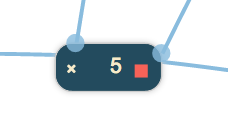

This demonstration is a clone of the Groups demo, but using the Toolkit's Angular 2 integration. jsPlumb's Angular 2 integration and demonstrations are based on the Angular 2 Quickstart Guide.

{
"scripts": {
"tscr":"tsc -traceResolution",
"tsc":"tsc"
},
"dependencies": {
"@angular/common": "~2.4.0",
"@angular/compiler": "~2.4.0",
"@angular/core": "~2.4.0",
"@angular/forms": "~2.4.0",
"@angular/http": "~2.4.0",
"@angular/platform-browser": "~2.4.0",
"@angular/platform-browser-dynamic": "~2.4.0",
"@angular/router": "~3.4.0",
"@angular/upgrade": "~2.4.0",
"systemjs": "0.19.40",
"core-js": "^2.4.1",
"reflect-metadata": "^0.1.8",
"rxjs": "~5.0.2",
"zone.js": "^0.7.4",
"jsplumbtoolkit":"file:../../jsplumbtoolkit.tgz",
"jsplumbtoolkittypes":"file:../../types/jsplumbtoolkit",
"jsplumbtypes":"file:../../types/jsplumb",
"font-awesome": "^4.7.0"
},
"devDependencies": {
"concurrently": "^3.0.0",
"typescript": "~2.0.10"
}
}
As with the systemjs-config.js file discussed below, this was taken directly from the Angular 2 Quickstart Guide.
There are three entries specific to jsPlumb:
"jsplumbtoolkit":"file:../../jsplumbtoolkit.tgz",
"jsplumbtoolkittypes":"file:../../types/jsplumbtoolkit",
"jsplumbtypes":"file:../../types/jsplumb"
The first of these is the jsPlumb Toolkit code. The other two entries link to the Typescript Definition files, which are discussed here.
<link href="//maxcdn.bootstrapcdn.com/bootstrap/3.2.0/css/bootstrap.min.css" rel="stylesheet">
<link href="node_modules/font-awesome/css/font-awesome.min.css" rel="stylesheet">
<link rel="stylesheet" href="node_modules/jsplumbtoolkit/dist/css/jsplumbtoolkit-defaults.css">
<link rel="stylesheet" href="node_modules/jsplumbtoolkit/dist/css/jsplumbtoolkit-demo.css">
<link rel="stylesheet" href="app.css">
Font Awesome, Bootstrap, jsplumbtoolkit-demo.css, and app.css are used for this demo and are not jsPlumb Toolkit requirements. jsplumbtoolkit-defaults.css is recommended for
all apps using the Toolkit, at least when you first start to build your app. This stylesheet contains sane defaults for the various widgets in the Toolkit.
<script src="node_modules/core-js/client/shim.min.js"></script>
<script src="node_modules/zone.js/dist/zone.js"></script>
<script src="node_modules/systemjs/dist/system.src.js"></script>
<script src="systemjs.config.js"></script>
<script>
System.import('app').catch(function(err){ console.error(err); });
</script>
We use SystemJS as the loader for this application; this is fairly common with Angular 2 apps. The actual source files, which are Typescript files in the src directory, are:
This is the tsconfig.json file used by this demonstration:
{
"compilerOptions": {
"target": "es5",
"module": "commonjs",
"moduleResolution": "node",
"sourceMap": true,
"emitDecoratorMetadata": true,
"experimentalDecorators": true,
"lib": [ "es2015", "dom" ],
"noImplicitAny": true,
"suppressImplicitAnyIndexErrors": true
},
"include":[ "src/**/*" ]
}
The two things to note here are that we use commonjs as the module type, and we have moduleResolution set to node. Both of these settings are required by jsPlumb.
This is the config file for SystemJS we use in this demonstration. This is taken directly from the Angular 2 Quickstart Guide, with the addition of entries for the Community and Toolkit editions of jsPlumb:
/**
* System configuration for Angular samples
* Adjust as necessary for your application needs.
*/
(function (global) {
System.config({
paths: {
// paths serve as alias
'npm:': 'node_modules/'
},
// map tells the System loader where to look for things
map: {
// our app is within the app folder
app: 'src',
// angular bundles
'@angular/core': 'npm:@angular/core/bundles/core.umd.js',
'@angular/common': 'npm:@angular/common/bundles/common.umd.js',
'@angular/compiler': 'npm:@angular/compiler/bundles/compiler.umd.js',
'@angular/platform-browser': 'npm:@angular/platform-browser/bundles/platform-browser.umd.js',
'@angular/platform-browser-dynamic': 'npm:@angular/platform-browser-dynamic/bundles/platform-browser-dynamic.umd.js',
'@angular/http': 'npm:@angular/http/bundles/http.umd.js',
'@angular/router': 'npm:@angular/router/bundles/router.umd.js',
'@angular/forms': 'npm:@angular/forms/bundles/forms.umd.js',
'jsplumbtoolkit':"npm:jsplumbtoolkit/dist/js/jsplumbtoolkit.js",
// other libraries
'rxjs': 'npm:rxjs',
'angular-in-memory-web-api': 'npm:angular-in-memory-web-api/bundles/in-memory-web-api.umd.js'
},
// packages tells the System loader how to load when no filename and/or no extension
packages: {
app: {
main: './main.js',
defaultExtension: 'js'
},
rxjs: {
defaultExtension: 'js'
}
}
});
})(this);
The jsPlumb Toolkit is referenced in package.json as a local file.
Templates are stored in the templates directory as HTML files.
This is the template used to render Nodes:
<div>
<div class="name">
<div class="delete" title="Click to delete" (click)="remove(node)">
<i class="fa fa-times"></i>
</div>
<span></span>
</div>
<div class="connect"></div>
<jtk-source filter=".connect"></jtk-source>
<jtk-target></jtk-target>
</div>
This is the template used to render Groups:
<div>
<div class="group-title">
<button class="expand" (click)="toggleGroup(node)"></button>
</div>
<div jtk-group-content="true"></div>
</div>
Group templates can have arbitrary markup as with Node templates. By default, the DOM element representing any Node
that is a child of the Group will be appended to the Group's root element. You can, however, mark a place in the Group
element that should act as the parent of Node elements - by setting jsplumb-group-content="true" on the element you
wish to use. In this demo we use that concept to provide a title bar for each Group onto which Node elements can never
be dragged.
These templates are written in Angular 2's template format.
This is the data used by this demonstration:
{
"groups":[
{"id":"one", "title":"Group 1", "left":100, top:50 },
{"id":"two", "title":"Group 2", "left":450, top:250, type:"constrained" }
],
"nodes": [
{ "id": "window1", "name": "1", "left": 10, "top": 20, group:"one" },
{ "id": "window2", "name": "2", "left": 140, "top": 50, group:"one" },
{ "id": "window3", "name": "3", "left": 450, "top": 50 },
{ "id": "window4", "name": "4", "left": 110, "top": 370 },
{ "id": "window5", "name": "5", "left": 140, "top": 150, group:"one" },
{ "id": "window6", "name": "6", "left": 50, "top": 50, group:"two" },
{ "id": "window7", "name": "7", "left": 50, "top": 450 }
],
"edges": [
{ "source": "window1", "target": "window3" },
{ "source": "window1", "target": "window4" },
{ "source": "window3", "target": "window5" },
{ "source": "window5", "target": "window2" },
{ "source": "window4", "target": "window6" },
{ "source": "window6", "target": "window2" }
]
}
As with Nodes, if you're using the Absolute layout, you can specify left/top properties for the element.
Additionally, Groups are considered to have a type, just like Nodes, whose default value is default, but which can
be overridden in the same way as that of Nodes. Here we see the Group 2 is defined to be of type constrained, which we
will discuss in the View section below.
The relationship between Nodes and Groups is written into each Node's data, not into the Group data. Here we see that
4 of the Nodes in our dataset have a group declared.
We use SystemJS to bootstrap the application:
<script src="systemjs.config.js"></script>
<script>
System.import('app').catch(function(err){ console.error(err); });
</script>
Here, app is a module defined in src/app.module.ts:
import { NgModule, CUSTOM_ELEMENTS_SCHEMA } from '@angular/core';
import { BrowserModule } from '@angular/platform-browser';
import { AppComponent, QuestionNodeComponent, ActionNodeComponent, StartNodeComponent, OutputNodeComponent } from './app.component';
import { jsPlumbToolkitModule } from "./jsplumbtoolkit-angular2";
import { Dialogs } from "jsplumbtoolkit"
@NgModule({
imports: [ BrowserModule, jsPlumbToolkitModule ],
declarations: [ AppComponent, QuestionNodeComponent, ActionNodeComponent, StartNodeComponent, OutputNodeComponent ],
bootstrap: [ AppComponent ],
entryComponents: [ QuestionNodeComponent, ActionNodeComponent, StartNodeComponent, OutputNodeComponent ],
schemas:[ CUSTOM_ELEMENTS_SCHEMA ]
})
export class AppModule {
constructor() {
// initialize dialogs
Dialogs.initialize({
selector: ".dlg"
});
}
}
The demo is written as a root level component, which itself uses components from the jsPlumb Angular 2 module.
<jsplumb-toolkit jtk-id="demoToolkit" surface-id="demoSurface" style="width:750px;height:600px;position:relative;margin-right: 20px;">
...
<!-- miniview -->
<jsplumb-miniview surface-id="flowchartSurface" class="miniview"></jsplumb-miniview>
</jsplumb-toolkit>
Points to note:
params (for the Toolkit constructor) and renderParams (for the renderer) are provided.init method is declared; this will be executed after the Toolkit and Surface have been created.Here is how the palette (the set of nodes that can be dragged into the work area) is declared:
<div class="sidebar node-palette" jsplumb-palette selector="li" surface-id="flowchartSurface" type-extractor="DemoController.typeExtractor">
<ul ng-repeat="node in nodeTypes">
<li jtk-node-type="{{ node.type }} " title="Drag to add new">
{{node.label}}
</li>
</ul>
</div>
Points to note:
nodeTypes is an object in the scope of DemoController.surface-id maps to the surface-id specified in the jsplumb-toolkit directive.selector attribute instructs the Palette to look for any li elements that are descendants of the Palette's element.type-extractor function is specified; this is what determines the type of newly dropped elements.The Toolkit instance is created with a groupFactory and a nodeFactory; these are the functions used when a new
Group or Node is created after the user drags something on to the canvas:
toolkitParams = {
groupFactory:(type:string, data:any, callback:Function) => {
data.title = "Group " + (toolkit.getGroupCount() + 1);
callback(data);
},
nodeFactory:(type:string, data:any, callback:Function) => {
data.name = (toolkit.getNodeCount() + 1);
callback(data);
}
};
Render params are declared as a member of the demo component, and referenced in the jsplumb-toolkit component declaration in the demo component's template:
renderParams = {
layout:{
type:"Absolute"
},
events: {
canvasClick: (e:Event) => {
this.toolkitComponent.toolkit.clearSelection();
},
modeChanged:(mode:string) => {
var controls = document.querySelector(".controls");
jsPlumb.removeClass(controls.querySelectorAll("[mode]"), "selected-mode");
jsPlumb.addClass(controls.querySelectorAll("[mode='" + mode + "']"), "selected-mode");
}
},
jsPlumb: {
Anchor:"Continuous",
Endpoint: "Blank",
Connector: [ "StateMachine", { cssClass: "connectorClass", hoverClass: "connectorHoverClass" } ],
PaintStyle: { strokeWidth: 1, stroke: '#89bcde' },
HoverPaintStyle: { stroke: "orange" },
Overlays: [
[ "Arrow", { fill: "#09098e", width: 10, length: 10, location: 1 } ]
]
},
lassoFilter: ".controls, .controls *, .miniview, .miniview *",
dragOptions: {
filter: ".delete *"
},
consumeRightClick:false
};
Parameters for the layout. Here we specify an Absolute layout. It is the only layout currently that supports Groups.
This selector specifies elements on which a mousedown should not cause the selection lasso to begin. In this demonstration we exclude the buttons in the top left and the miniview.
We listen for two events:
canvasClick - a click somewhere on the widget's whitespace. Then we clear the Toolkit's current selection.
modeChanged - Surface's mode has changed (either "select" or "pan"). We update the state of the buttons.
We define a filter for elements that should not cause a node to be dragged.
Recall that the Surface widget is backed by an instance of jsPlumb Community Edition. This parameter sets the Defaults for that object.
view = {
nodes:{
"default":{
template:"node"
}
},
groups:{
"default":{
template:"group",
endpoint:"Blank",
anchor:"Continuous",
revert:false,
orphan:true,
constrain:false
},
constrained:{
parent:"default",
constrain:true
}
}
};
The single Node mapping is the most basic Node mapping possible; Nodes derive their Anchor and Endpoint definitions from
the jsPlumb params passed in to the Surface parameters discussed above.
The Group mappings, though, bear a little discussion. First, the default Group mapping:
revert to false if orphan is set to true, but in this demo we included all the possible flags
just for completeness.The constrained Group mapping is declared to extend default, so it gets all of the values defined therein, but it
overrides constrain to be true: Nodes cannot be dragged out of the Group element for this type of Group (in this demo
we set Group 2 to be of type constrained, and Group 1 - and any Groups dragged on - to be of type default).
The ngAfterViewInit method of the demo component looks like this:
const toolkit = this.toolkitComponent.toolkit;
const surface = this.toolkitComponent.surface;
const controls = document.querySelector(".controls");
// pan mode/select mode
jsPlumb.on(controls, "tap", "[mode]", function() {
surface.setMode(this.getAttribute("mode"));
});
// on home button click, zoom content to fit.
jsPlumb.on(controls, "tap", "[reset]", () => {
toolkit.clearSelection();
surface.zoomToFit();
});
// this is just for the demo, to remind people to run npm install
const buildme = document.getElementById("buildme");
buildme.parentNode.removeChild(buildme);
// ---------------- update data set -------------------------
var _syntaxHighlight = function (json:string) {
json = json.replace(/&/g, '&').replace(/</g, '<').replace(/>/g, '>');
return "<pre>" + json.replace(/("(\\u[a-zA-Z0-9]{4}|\\[^u]|[^\\"])*"(\s*:)?|\b(true|false|null)\b|-?\d+(?:\.\d*)?(?:[eE][+\-]?\d+)?)/g, function (match) {
var cls = 'number';
if (/^"/.test(match)) {
if (/:$/.test(match)) {
cls = 'key';
} else {
cls = 'string';
}
} else if (/true|false/.test(match)) {
cls = 'boolean';
} else if (/null/.test(match)) {
cls = 'null';
}
return '<span class="' + cls + '">' + match + '</span>';
}) + "</pre>";
};
toolkit.load({
data : {
"groups":[
{"id":"one", "title":"Group 1", "left":100, top:50 },
{"id":"two", "title":"Group 2", "left":450, top:250, type:"constrained" }
],
"nodes": [
{ "id": "window1", "name": "1", "left": 10, "top": 20, group:"one" },
{ "id": "window2", "name": "2", "left": 140, "top": 50, group:"one" },
{ "id": "window3", "name": "3", "left": 450, "top": 50 },
{ "id": "window4", "name": "4", "left": 110, "top": 370 },
{ "id": "window5", "name": "5", "left": 140, "top": 150, group:"one" },
{ "id": "window6", "name": "6", "left": 50, "top": 50, group:"two" },
{ "id": "window7", "name": "7", "left": 50, "top": 450 }
],
"edges": [
{ "source": "window1", "target": "window3" },
{ "source": "window1", "target": "window4" },
{ "source": "window3", "target": "window5" },
{ "source": "window5", "target": "window2" },
{ "source": "window4", "target": "window6" },
{ "source": "window6", "target": "window2" }
]
},
onload:function() {
surface.centerContent();
surface.repaintEverything();
}
});
There are two pieces of behaviour that we need to code that are not completely handled for us by the Toolkit:
which is to say, the Toolkit's API provides functions to call to do these things, but there is no automatic binding of these functions to elements in the UI.
<div class="delete" title="Click to delete" (click)="remove(obj)">
<i class="fa fa-times"></i>
</div>
remove(obj) {
this.toolkit.removeNode(obj);
};
remove, which is a method on the NodeComponent, makes a direct call to the removeNode method on the underlying Toolkit instance.
<button class="expand" (click)="toggleGroup(obj)"></button>
toggleGroup(group) {
this.surface.toggleGroup(group);
};
toggleGroup is a method on the GroupComponent.
Lasso selection is enabled by default on the Surface widget. To activate the lasso, click the pencil icon in the toolbar:

The code that listens to clicks on this icon is as follows:
// pan mode/select mode
jsPlumb.on(".controls", "tap", "[mode]", function () {
renderer.setMode(this.getAttribute("mode"));
});
The tap listener extracts the desired mode from the button that was clicked and sets it on the renderer. This causes
a modeChanged event to be fired, which is picked up by the modeChanged event listener in the View.
Note that here we could have used a click listener, but tap works better for mobile devices.
The lasso works in two ways: when you drag from left to right, any node that intersects your lasso will be selected. When you drag from right to left, only nodes that are enclosed by your lasso will be selected.
The Surface widget automatically exits select mode once the user has selected something. In this application we also listen to clicks on the whitespace in the widget and switch back to pan mode when we detect one. This is the events argument to the render call:
events: {
canvasClick: function (e) {
toolkit.clearSelection();
}
}
clearSelection clears the current selection and switches back to Pan mode.
As discussed above, a jsplumb-palette is declared, which configures all of its child li elements to be droppable onto
the Surface canvas. When a drop occurs, the type of the newly dragged node is calculated by the typeExtractor
function declared on DemoController:
this.typeExtractor = function (el) {
return el.getAttribute("jtk-node-type");
};
For a detailed discussion of this functionality, see this page.

Clicking the X button in this demonstration deletes the current node.
jsPlumb.on("#canvas", "tap", ".delete *", function (e) {
var info = toolkit.getObjectInfo(this);
toolkit.removeNode(info.obj);
});
Clicking the - button in this demonstration collapses a Group. It then changes to a +, which, when clicked, expands the Group.
jsPlumb.on(canvasElement, "tap", ".group-title button", function(e) {
var info = toolkit.getObjectInfo(this);
if (info.obj) {
renderer.toggleGroup(info.obj);
}
});
The label of the button is changed via css: when a group is collapsed, it is assigned the CSS class jsplumb-group-collapsed.
In the CSS for this demo we have these rules:
.group-title button:after {
content:"-";
}
.jtk-group.jtk-group-collapsed .group-title button:after {
content:"+";
}
Another point to note is that the Toolkit does not take any specific action to "collapse" your Groups visually. It is left
up to you to respond to the jsplumb-group-collapsed class as you need to. In this demo, we simply hide the group content
area:
.jtk-group.jtk-group-collapsed [jtk-group-content] {
display:none;
}